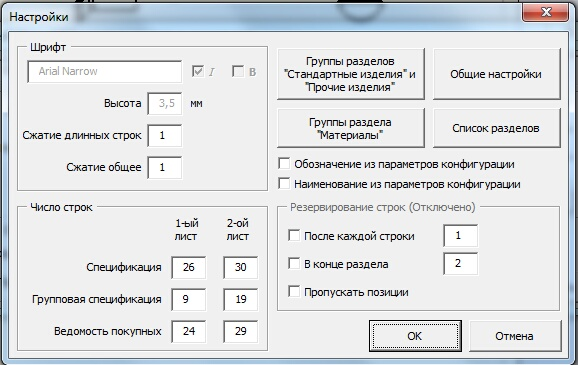
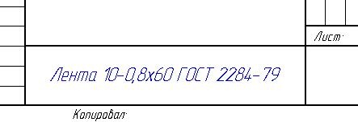
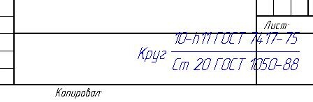

Вопрос-Ответ |
Top Previous Next |
|
В: Если название состоит из 5 и больше слов (так вышло), то как заставить MProp автоматически разбивать на пару строк в основной надписи, не влазя туды ручками? О: В поле Наименования макроса Mprop нужно вводить текст в две строки, через Enter, тогда и в чертеже в две строки будет.
В: Можно ли уменьшить шрифт в спецификации в графе "примечание", "доработка" не влазит)) О: В отдельном столбце только вручную. Еще можно установить в настройках поджатие длинных строк или всего текста.
В: Почему у меня на сборочном чертеже с подсборками, позиции проставляются на деталях подсборок? О: Нужно в свойствах таблицы спецификации выбрать тип "Только верхнего уровня". Это лучше делать сразу при добавлении таблицы.
В: Можно ли для каждой конфигурации задать индивидуальное имя в наименовании чертежа? Меняю в Dprop Наименование так ко всем конфигурациям добовляется это имя. О: Полностью индивидуальное имя задать нельзя. Если у изделия есть исполнения, то для них можно задать Условное наименование, которое добавится к Наименованию. Это условное наименование будет фигурировать также и в групповой спецификации. Также и обозначение нельзя задавать разным для разных конфигураций. Это сделано чтобы соблюдался принцип одно изделие - один файл. Иначе бардак начинается.
В: Как задать сжатие шрифтов
 О: Надо выставить нужные значения в графах "Сжатие длинных строк" или "Сжатие общее".
В: У спецификации сделать возможность убрать доп. графы? О: Проще и правильнее если графы не нужны, удалить их руками из шаблонов.
В: Какой принцип работы макроса с конфигурациями? О: Я, по возможности вынес эти принципы "за скобки", чтобы сделать макросы как можно более универсальными. Основной принцип тот, что для деталей и сборок конфигурации верхнего уровня - это исполнения. И они именуются как 00, 01 и т.д. В моих шаблонах детали и сборки имя конфигурации "по умолчанию" заменено на 00, это базовое исполнение. Детали и сборки, используемые в других сборках, или детали, используемые в других деталях как базовые, в базовом исполнении должны применяться в них только в этой конфигурации. Если деталь или сборка имеет несколько вариантов отображения (в рамках одного исполнения), то это реализовывается через вложенные, или как они обозваны в солиде, извлеченные конфигурации. Эти извлеченные конфигурации именуются как "00 ГЧ", "00 Э3", "00 Для чертежа", "00 Для расчетов" и т.д. Например есть прокладка, которая вставлена в сборку в сжатом виде. Тогда конфигурация 00 эта сжатая конфигурация для сборки, а конфигурация "00 Для чертежа" соответственно для чертежа, не сжатая. Я думаю, принцип понятен - все конфигурации верхнего уровня называются номерами исполнений. Для стандартных и прочих изделий, для которых чертежи не выпускаются, конфигурации это разные типоразмеры. Использование данной логики работы с конфигурациями заложено в макросах MProp и SProp для заполнения свойств. В макросе MProp есть галочка "Из конфигурации". Она становится активной при установленной галочке "Исполнение" и вставляет имя конфигурации в качестве номера исполнения. Причем текстовая часть, например "ГЧ" для конфигурации "00 ГЧ", отбрасывается. В макросе SProp есть галочка "Включить имя конфигурации". Она добавляет имя конфигурации, например М3х6 между Винт и DIN 912. Я думаю, это тоже понятно.
В: Как иправить такое
  О: Сохранить чертеж и открыть снова, всё встанет на свои места.
В: При создании ведомости покупных, что и куда записать чтобы была заполнена графа "Куда входит"? О: Только вручную после генерации ведомости. Автоматизировать заполнение входимости сложно.
В: Как изменить цвет всей основной надписи? Она у меня серая и на экране и на печати. О: Печать-параметры страницы-цвет чертежа-черно_белый
В: Возникла ошибка run-time error 91: object variable or with block variable not set. Что делать? О: Проверить подключенные библиотеки, поставить последний сервис-пак к solidworks.
В: Как изменить и где АБВГ и фирму набить ? О: В папке макроса Mpop есть файл MProp_Firm.txt. Пишите там то, что нужно. Только учтите, что число строк в файле должно быть четным. Например если у вас одна фирма, то оставьте 2 строки ОАО "Фирма" АБВГ Если АБВГ вам не нужно, оставьте просто пустую строку.
В: За что отвечает кнопка ("галочка") "без масштаба"? О: Ставит прочерк в графе масштаб на первом листе чертежа. Нужно для схем и групповых чертежей.
В: Можно ли забить разные обозначения для разных исполнений одной и той же модели!? То есть не разные исполнения -01, -02 и т.д., а разные обозначения КД-123 и КД-124. О: Пишите вместо 01 и 02 свои 123 и 124. Т.е. у вас должна стоять только галочка "Исполнение", а галочку "Из конфигурации" снимите, если хотите что-то свое вбить, отличное от имени конфигурации. Это и будет переменная часть Обозначения. Но я обычно называю конфигурации 00, 01 и т .д. И тогда все очень удобно.
В: Как быть со стандартными изделиями из тулбокса, в спецификации проставляются пустыми строчками, но ведь SWR-спецификация от куда-то тянет их названия? О: "Тянет" из имени конфигурации, а спецификация SW из свойства. Видимо в этом и все проблемы.
В: А Вы слышали об ОТДЕЛЬНОМ РАЗДЕЛЕ - Покупные изделия? О: Вы можете добавить нужный вам раздел в файл SpecEditor_Sections.txt. И макросы будут с ним работать
В: в MProp с помошью кнопки не добавляются профили для фамилий. Стандартные профили удалил через окошко макроса, а новые не добавляются. Забил в блокнот "MProp_Prof.txt" пару профилей - результата ноль? О: Написал свои фамилии, нажал на кнопку Добавить и все - макрос сам сохранил
В: Можно ли сделать: Винты ГОСТ 17475-80 О: пока такой возможности нет, только полные отдельные строки
В: Как сделать оформление материала из листового проката? О: Включаете в MProp Задать Сортамент и вписываете (<STACK> вводить не надо)
В: Что значит группировать конфигурации. Деталь с разными конфигурациями, даже если поставлена галочка "Группировать конфигурации" входит в спецификацию с разными номерами. О: Проверьте, что в свойства таблицы спецификации в пункте про группировку конфигураций выбран последний (третий) переключатель "Отобразить как конфигурации одной позиции с тем же именем".
В: Не работает макрос (например: SaveAsPDF), при нажатии на кнопку ничего не происходит О: Проверьте, что в качестве метода запуска выбран - run.main (в свойствах кнопки)
В: Делаю Чертеж БЧ, забиваю формат БЧ в свойствах детали, но в примечаниях прога не ставит числовое значение массы, а пишет - МАССА. Должно писать слово "Масса" в спецификацию? О: Так и должно быть, главное что бы в свойство Примечание писалось то, что надо. И соответственно в спецификацию попадало. Т.е. в спецификацию должно попадать значение массы с размерностью. А в свойство Примечание что-то типа этого: "SW-Mass@@00@$PRP:"SW-File Name".SLDPRT" кг. В: Макрос SaveAsPDF нормально сохраняет только стандартные форматы, а вот кратные (А4х4 и т.д.) сохраняет на листе А4 О: Это ограничение PDFCreator. Кратные форматы можно сохранять только встроенным сохранятелем. Чтобы было без глюков изображения, можно в tiff. В ini файле макроса SaveAsPDF можно настроить разные режимы сохранения.
В: А для чего некоторые свойства расположены на вкладке "настройки" а некоторые на вкладке "конфигурация"? Тот же "проверил" для одного чертежа может же быть только один...вроде О: С одного файла модели может быть сделано несколько чертежей, например СБ, ГЧ и т.д. Для каждого документа своя конфигурация. "Проверил" может быть разным. В: При создании форматки сначала пишет, что файл создан в более старой версии и предлагает сохранить в новой. При отказе пересохранения вылетает ошибка run‑time error 53. Если пересохранить файл, то вылезает ошибка run-time error 91. О: Перед использованием макросов в новой версии SW, лучше пересохранить все шаблоны. Также необходимо убедиться, что система позволяет макросу операции с файлами (удаление, переименование).
В: Почему может возникнуть такая ошибка: сборочная единица попадает в раздел деталей О: Значит принудительно задан данный раздел. Проверьте свойство Раздел, или посмотрите в Mprop.
В: run-time error 91: object variable or with block variable not set О: Это скорее всего сервиспак - вернее его отсутствие
В: Можно ли использовать макрос для составления спецификации "сварных" деталей? О: Нет
В: Подскажите, как можно сделать, чтобы при генерации спецификации в разделе Материалы в графе кол. стояло бы например: 50мм, 5г. , а не кол-во ? О: В свойствах файла: Суммарная информация>Настройки>Количество в спецификации – из выпадающего списка выбрать Масса… И тогда в графе кол-во, будет выводиться масса детали, а не кол-во деталей…
В: Библиотека материалов ошибок не выдает, правда в MProp в Базе пишется "Временная база". О: «Временная база» означает, что Солид не может найти материал, заданный в детали или Ваша база материалов многоуровневая (с сортаментом). С такими базами макрос пока не работает. Уровней должно быть не более 2. Выбор материала реализован через раскрывающиеся списки. Их всего три - база, группа и материал. Если существуют еще уровни подгрупп, то девать их некуда.
В: Генерирую спецификацию с помощью SpecEditor v.4.4 все хорошо получается, но вот запускаю опять MProp и вижу что формат считывает не А2 а А4… и получается что все сборки с А4-тым форматом. О: Формат, прописанный в свойствах сборки должен быть А4. Макрос его правильно исправляет, потому что для сборки основной конструкторский документ это спецификация, а у нее формат А4 и в спецификацию в раздел Сборочные единицы оно так и попадает. А формат сборочного чертежа, для которого вы делаете спецификацию, считывается при генерации спецификации с самого чертежа. И в разделе Документация прописывается тот что надо.
В: При создании ведомости покупных, что и куда записать чтобы была заполнена графа "Куда входит"? О: Только вручную после генерации ведомости.
В: Как настроить параметры изменения оформления чертежа по умолчанию? Сейчас высота размеров - 3,5 (нужно 5), высота шероховатости 2,5 (нужно 3,5) О: Все настройки оформления содержаться в файле стандарта Mystandart. Меняешь этот файл, меняешь шаблон чертежа (drwdot). Обновляешь форматки.
В: Как правильно записать исполнение в спецификацию, чтоб позиции не полетели. О: ГОСТ допускает запись АБВГ.1234.56-01, после основного АБВГ.1234.56. Присваивайте исполнениям (конфигурациям) - Основное исп.- 01... (и не будет проблем).
|